1. Introducción y acceso a la plataforma
PAMEL LMS es el sistema de gestión de aprendizaje del Maritime Training Center de Panamá. Permite a instructores crear cursos con lecciones, evaluaciones y seguimiento del progreso, y a los estudiantes completar su formación marítima de forma autónoma desde cualquier dispositivo.
1.1 Requisitos
- Navegador web moderno: Chrome, Firefox, Edge o Safari (versión reciente)
- Conexión a internet estable
- Cuenta registrada en la plataforma (proporcionada por PAMEL)
1.2 Cómo ingresar
- Abre tu navegador y visita la dirección web de la plataforma.
- Haz clic en "Iniciar Sesión" en la esquina superior derecha.
- Ingresa tu correo electrónico y contraseña.
- Haz clic en "Iniciar Sesión". Serás redirigido a tu panel según tu rol.
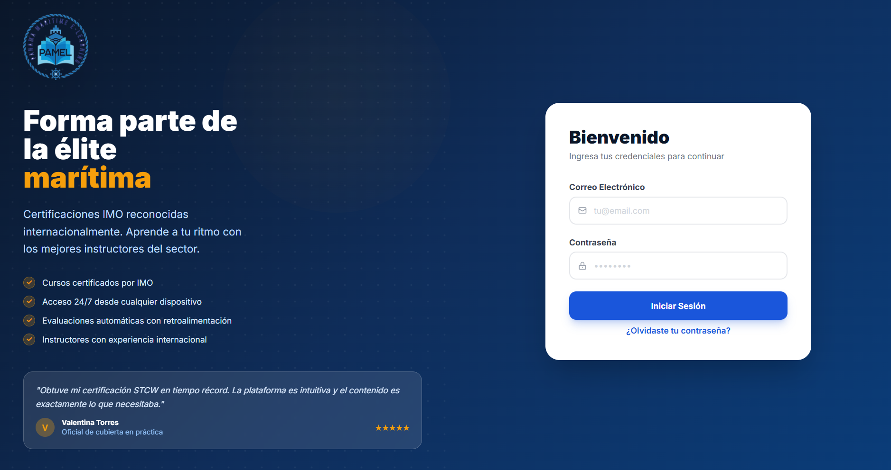
1.3 Cerrar sesión
Haz clic en tu nombre/avatar en la esquina superior derecha y selecciona "Cerrar Sesión".
2. Roles de usuario
La plataforma tiene tres tipos de usuario con diferentes permisos:
| Rol | Descripción | Accesos principales |
|---|---|---|
| Estudiante | Aprende y completa cursos | Ver cursos, inscribirse, ver lecciones, realizar evaluaciones, ver su progreso |
| Instructor | Crea y gestiona cursos | Crear/editar cursos propios, agregar lecciones y quizzes, ver estudiantes inscritos |
| Administrador | Gestiona toda la plataforma | Todo lo anterior + gestión de usuarios, acceso a todos los cursos, reportes |
3. Guía del Estudiante Estudiante
3.1 Panel de inicio (Dashboard)
Al iniciar sesión, el estudiante ve su panel personal con:
- Cursos en los que está inscrito, con barra de progreso
- Número de lecciones completadas y pendientes
- Acceso rápido para continuar donde lo dejó
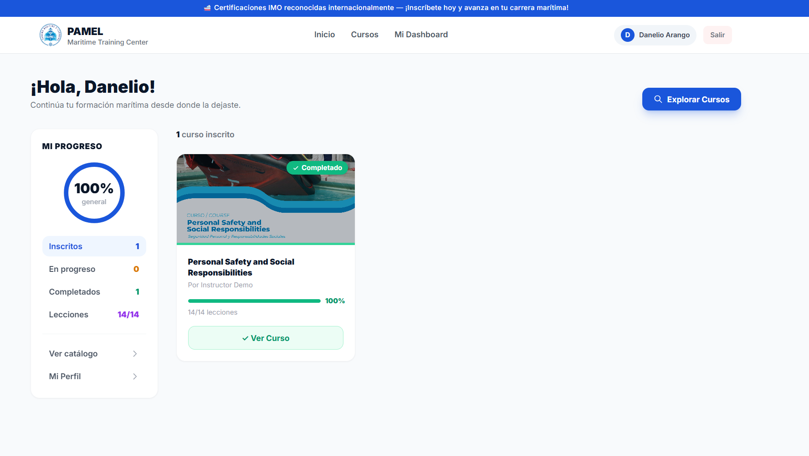
3.2 Explorar el catálogo de cursos
- En el menú superior, haz clic en "Cursos".
- Usa los filtros de categoría en el panel izquierdo para encontrar el curso.
- Haz clic en la tarjeta del curso para ver su detalle.
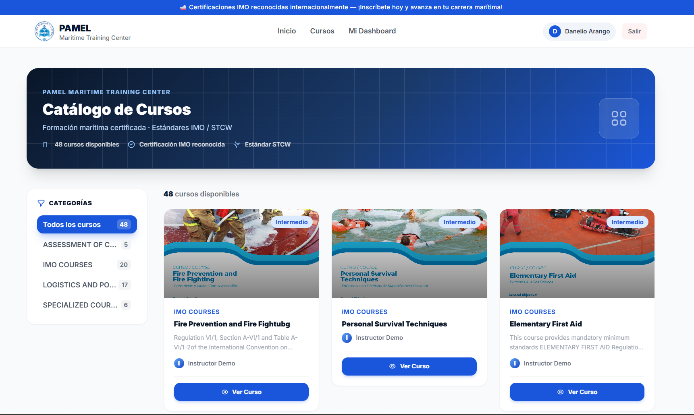
3.3 Inscribirse en un curso
La inscripción en PAMEL requiere completar un formulario de admisión previo. El proceso es el siguiente:
- Abre el detalle del curso que deseas tomar.
- En el panel lateral derecho, haz clic en el botón "Solicitar Admisión".
- Serás redirigido al formulario de admisión oficial de PAMEL:
https://pamel.edu.pa/formulario-de-admision - Completa todos los campos del formulario con tus datos personales y académicos.
- Envía el formulario. El equipo de PAMEL revisará tu solicitud.
- Una vez aprobada tu admisión, el administrador habilitará tu acceso al curso en la plataforma.
- Recibirás tus credenciales de acceso por correo electrónico.
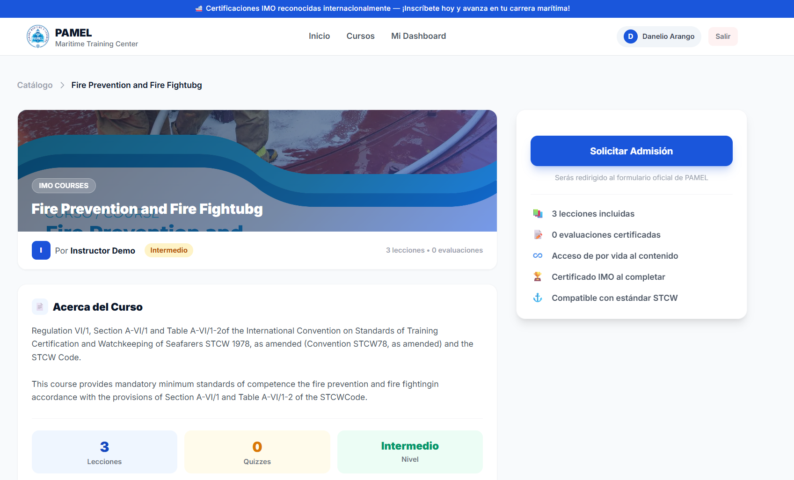
3.4 Tomar una lección
- Desde el detalle del curso o tu dashboard, haz clic en el nombre de la lección.
- Lee el contenido. La barra de progreso de lectura en la parte superior muestra cuánto has avanzado en la página.
- Al terminar de leer, haz clic en "Marcar como completada" (aparece al llegar al 85% de la página).
- La lección quedará marcada con un ✓ verde en el índice del curso.
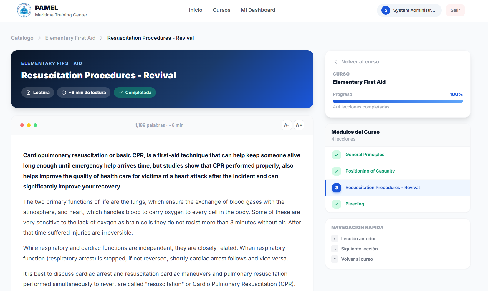
3.5 Ver imágenes en las lecciones
Haz clic en cualquier imagen dentro de una lección para verla en pantalla completa (modo lightbox). Presiona ESC o haz clic fuera de la imagen para cerrar.
Usa los botones A- y A+ en la esquina superior derecha del contenido para ajustar el tamaño del texto según tu preferencia.
3.6 Realizar una evaluación (Quiz)
- En el índice del curso, las evaluaciones aparecen con el ícono 📝 junto a las lecciones.
- Haz clic en el nombre de la evaluación para comenzar.
- Lee cada pregunta y selecciona la respuesta correcta haciendo clic en ella.
- La pregunta seleccionada se resalta en azul para confirmar tu selección.
- La barra superior muestra cuántas preguntas has respondido de un total.
- Si el quiz tiene tiempo límite, verás un cronómetro. Al llegar a 0, se envía automáticamente.
- Haz clic en "Enviar respuestas" para finalizar.
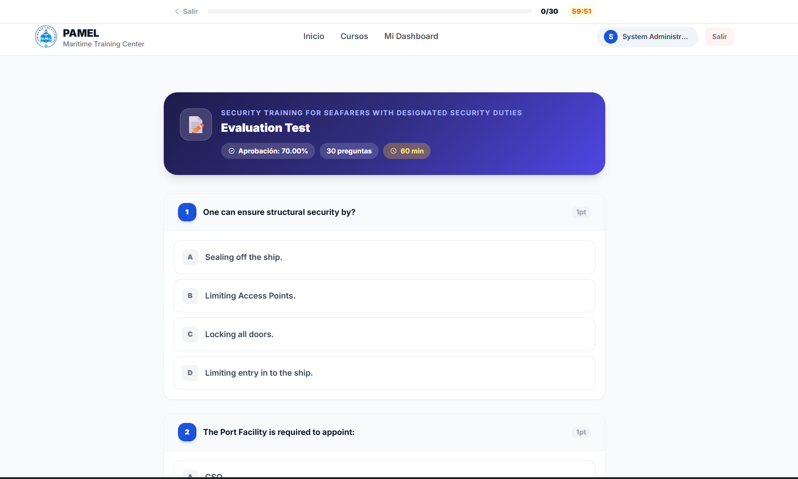
3.7 Ver los resultados de la evaluación
Al enviar la evaluación verás:
- Puntaje obtenido con animación circular
- Cantidad de preguntas correctas e incorrectas
- Puntaje mínimo para aprobar
- Revisión detallada: qué respondiste vs. la respuesta correcta en cada pregunta
Si aprobaste, verás confetti de celebración y el trofeo 🏆.
Si no aprobaste, puedes hacer clic en "Intentar de nuevo".
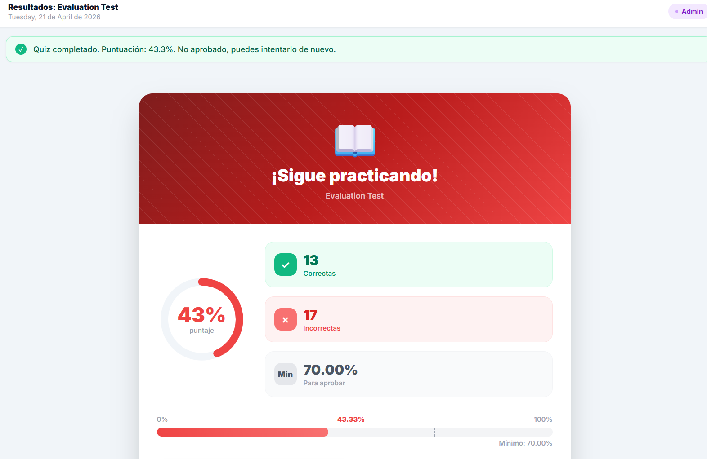
3.8 Formulario de satisfacción
Al completar todas las lecciones del curso, aparecerá en el panel lateral un botón de "Formulario de Satisfacción". Complétalo para compartir tu opinión sobre el curso. Este formulario es requerido por PAMEL como parte del proceso de certificación.
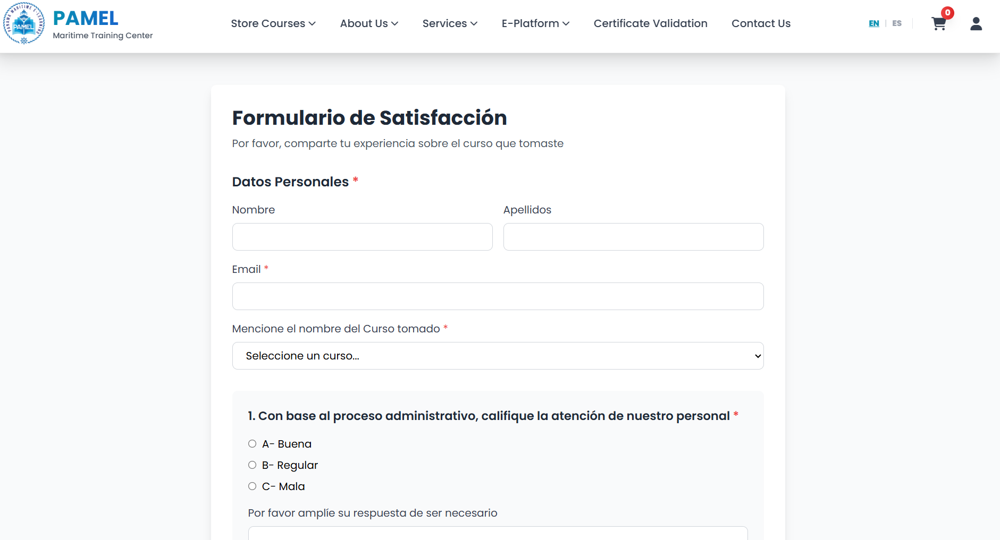
4. Guía del Instructor Instructor
4.1 Panel del instructor (Dashboard)
El instructor ve en su dashboard:
- Lista de sus cursos creados con estado (Borrador / Publicado / Archivado)
- Accesos rápidos para crear cursos, agregar lecciones y quizzes
- Número de estudiantes inscritos por curso
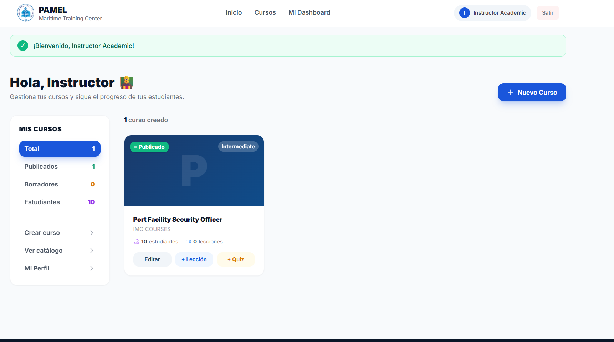
4.2 Crear un curso
- En el dashboard, haz clic en "Nuevo Curso".
- Completa el formulario:
- Título: nombre del curso (obligatorio)
- Descripción: objetivos, contenidos y público objetivo
- Categoría: área temática del curso
- Nivel: Principiante, Intermedio o Avanzado
- Precio: en USD (puede ser 0 si es gratuito)
- Gratuito: activa este toggle para que los estudiantes se inscriban sin pago
- Estado: Borrador (solo visible para ti) o Publicado (visible para todos)
- Imagen de portada: sube una imagen JPG, PNG o WebP (máx. 10MB)
- Haz clic en "Crear Curso".
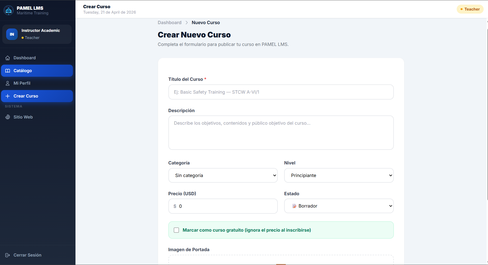
4.3 Editar un curso existente
- En el dashboard, haz clic en el ícono de editar ✏️ del curso.
- Modifica los campos necesarios.
- Para habilitar el formulario de satisfacción al final del curso, activa la opción "Habilitar formulario de satisfacción al finalizar el curso".
- Haz clic en "Guardar Cambios".
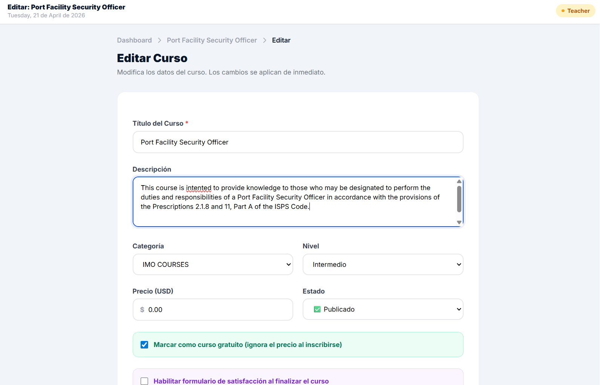
4.4 Agregar lecciones
- Abre el detalle del curso (haz clic en su título).
- En la sección de lecciones, haz clic en "+ Nueva Lección".
- Completa el formulario:
- Título: nombre de la lección
- Orden: número que define la posición en el índice
- Contenido: usa el editor de texto enriquecido para escribir el contenido
- Haz clic en "Guardar Lección".
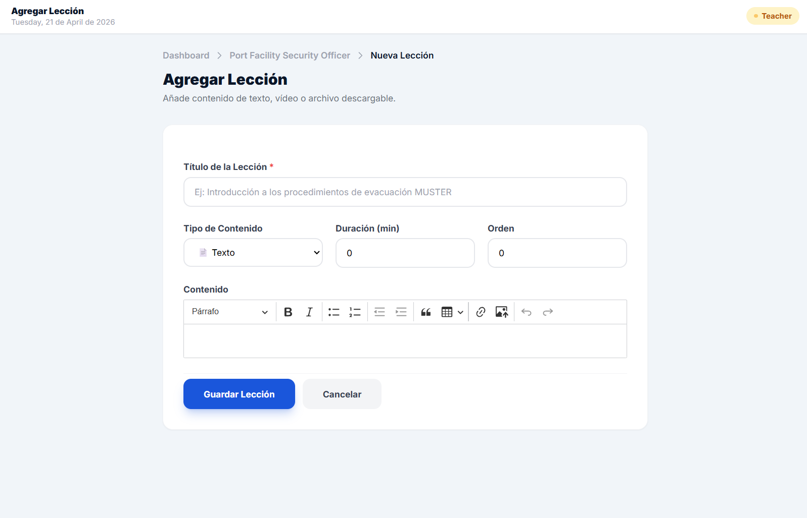
Opciones del editor de contenido
| Botón | Función |
|---|---|
| Párrafo / Título 1-3 | Define el estilo del texto seleccionado |
| N / I / S | Negrita, Cursiva, Subrayado |
| Lista • / Lista 1. | Lista con viñetas o numerada |
| Cita | Formato de cita destacada |
| Tabla | Inserta una tabla editable |
| Enlace 🔗 | Agrega un hipervínculo al texto seleccionado |
| Imagen 🖼️ | Sube una imagen directamente al contenido |
| Línea horizontal | Separador visual entre secciones |
4.5 Reordenar lecciones
El campo "Orden" en cada lección determina su posición en el índice. Edita el valor numérico para cambiar el orden: la lección con orden 1 aparece primera.
4.6 Crear evaluaciones (Quizzes)
- Abre el detalle del curso.
- En la sección de evaluaciones, haz clic en "+ Nueva Evaluación".
- Completa:
- Título: nombre de la evaluación
- Porcentaje mínimo para aprobar: ej. 70 (el estudiante necesita 70% para pasar)
- Tiempo límite: en minutos (0 = sin límite)
- Guarda y luego agrega las preguntas haciendo clic en "+ Agregar Pregunta".
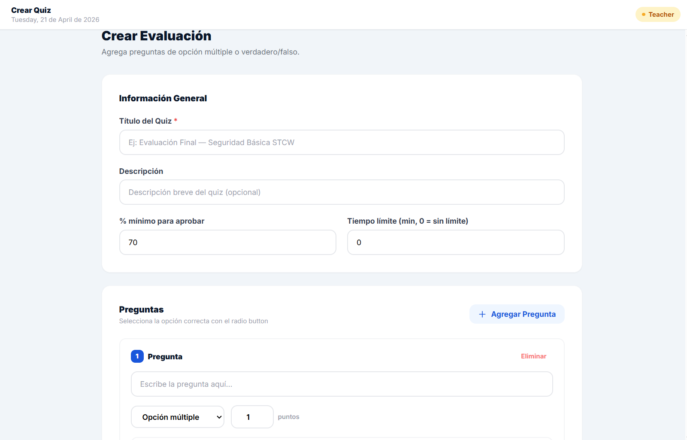
4.7 Agregar preguntas al quiz
- Desde el detalle del quiz, haz clic en "+ Nueva Pregunta".
- Escribe el enunciado de la pregunta.
- Agrega las opciones de respuesta (mínimo 2, máximo 4).
- Marca cuál es la respuesta correcta.
- Guarda la pregunta y repite para todas las preguntas del quiz.
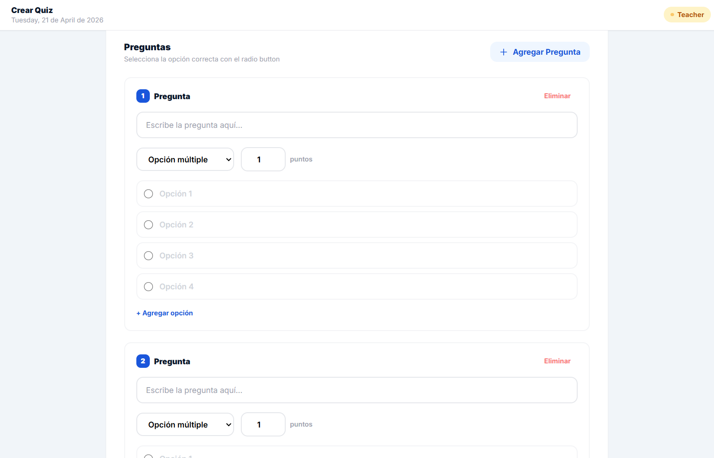
4.8 Eliminar un curso
Desde el dashboard, haz clic en el ícono de eliminar 🗑️ del curso. El sistema pedirá confirmación antes de borrar. Esta acción no se puede deshacer.
5. Guía del Administrador Admin
5.1 Panel del administrador
El administrador tiene acceso a todo lo que tiene el instructor, más:
- Gestión de usuarios (crear, editar, asignar roles)
- Acceso a todos los cursos (no solo los propios)
- Gestión de categorías
- Inscripción manual de estudiantes
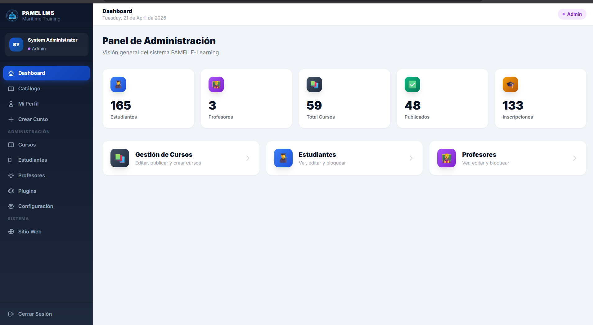
5.2 Gestión de usuarios
Crear un usuario
- En el dashboard, ve a Usuarios → Nuevo Usuario.
- Ingresa: nombre, correo electrónico, contraseña inicial y rol (estudiante/instructor/admin).
- Haz clic en "Crear Usuario".
- El usuario recibirá sus credenciales por correo (si el SMTP está configurado).
Editar o cambiar el rol de un usuario
- Ve a la lista de usuarios y haz clic en "Editar" en el usuario correspondiente.
- Modifica los campos necesarios, incluyendo el rol.
- Guarda los cambios.
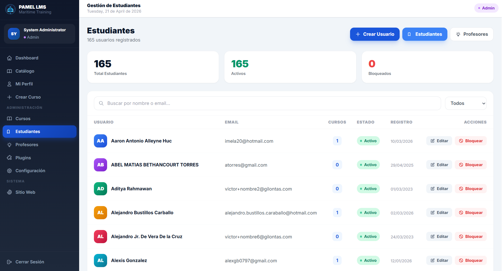
5.3 Gestión de categorías
Las categorías organizan los cursos en el catálogo. Desde el menú lateral del administrador, haz clic en Categorías para crear, editar o eliminar categorías.
- Ve a Dashboard → Categorías en el menú lateral.
- Para crear: escribe el nombre y haz clic en "+ Agregar".
- Para editar: haz clic en "Editar" en la fila correspondiente, modifica el nombre y guarda.
- Para eliminar: haz clic en "Eliminar" y confirma. Los cursos de esa categoría quedarán sin categoría asignada.
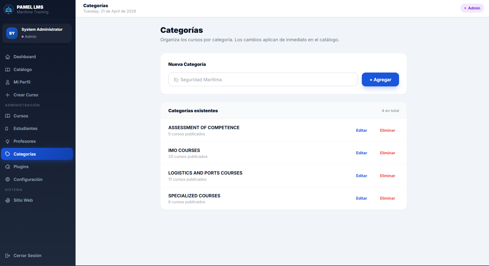
5.4 Inscribir manualmente a un estudiante
Si un estudiante realizó el pago fuera de la plataforma, el administrador puede inscribirlo manualmente:
- Abre el detalle del curso como administrador.
- En la sección de estudiantes inscritos, haz clic en "Inscribir Estudiante".
- Busca al usuario por nombre o correo y confírmalo.
5.5 Habilitar/deshabilitar formulario de satisfacción
- Ve al curso que deseas configurar.
- Haz clic en "Editar Curso".
- Activa o desactiva el toggle "Habilitar formulario de satisfacción".
- Guarda los cambios.
Cuando está habilitado, al completar todas las lecciones el estudiante verá el botón para acceder al formulario externo de satisfacción.
5.6 Cambiar el estado de un curso
| Estado | Visible en catálogo | Estudiantes pueden acceder |
|---|---|---|
| 📝 Borrador | No (solo instructor/admin) | No |
| ✅ Publicado | Sí | Sí (si están inscritos) |
| 🗄️ Archivado | No | Solo si ya estaban inscritos |

6. Preguntas frecuentes (FAQ)
¿Por qué no veo el botón "Inscribirme"?
Si ya estás inscrito en el curso, el botón cambia a "Continuar Curso". Si el curso tiene costo, el administrador debe habilitar tu inscripción manualmente después del pago.
¿Puedo repetir una evaluación si no aprobé?
Sí. Haz clic en "Intentar de nuevo" en la pantalla de resultados. Puedes realizarla las veces que sean necesarias.
¿Cómo sé que completé el curso?
El curso se considera completo cuando todas las lecciones tienen la marca ✓ verde. En ese momento, el formulario de satisfacción (si está habilitado) se activa en el panel lateral.
¿Puedo acceder desde el celular?
Sí. La plataforma es completamente responsiva y funciona en smartphones y tablets. Se recomienda el modo horizontal para ver las evaluaciones más cómodamente.
¿Qué hago si el contenido de una lección no carga?
Refresca la página con F5 o Ctrl+R. Si el problema persiste, limpia la caché del navegador (Ctrl+Shift+Delete) y vuelve a intentarlo.
¿Cómo cambio mi contraseña?
En la página de inicio de sesión, haz clic en "¿Olvidaste tu contraseña?" e ingresa tu correo. Recibirás un enlace para crear una nueva contraseña.
¿El progreso se guarda automáticamente?
Sí. Al hacer clic en "Marcar como completada", el sistema guarda inmediatamente tu progreso. No es necesario hacer nada adicional.
7. Soporte técnico
Para reportar problemas o solicitar ayuda, contacta al equipo de PAMEL:
| Canal | Contacto | Horario |
|---|---|---|
| Correo electrónico | info@pamel.com.pa | Lunes a viernes, 8am – 5pm |
| +507 6298-8137 | Lunes a viernes, 8am – 5pm | |
| Plataforma | Formulario de contacto en el sitio | 24/7 (respuesta en 24h hábiles) |
- Tu nombre y correo electrónico
- Nombre del curso o lección donde ocurrió el problema
- Descripción de lo que esperabas y lo que ocurrió
- Captura de pantalla del error (si es posible)
- Navegador y dispositivo que usas
Panama Maritine E-Learning, S.A. — Panamá
Este documento es de uso interno. Todos los derechos reservados.